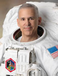

Lyndon B. Johnson Space Center
Houston, Texas 77058
|
National Aeronautics
and Space Administration Lyndon B. Johnson Space Center Houston, Texas 77058 |
 |
Biographical Data |
||
Lee M.E. Morin, M.D., Ph.D. (Captain, USN)
NASA ASTRONAUT
PERSONAL DATA: Born September 9, 1952 in Manchester, New Hampshire. Married. Two children. Two grandchildren. An amateur machinist, he enjoys math and jogging.
EDUCATION: Graduated from the Western Reserve Academy, Hudson, Ohio in 1970; received a Bachelor of Science degree in mathematical/electrical science from the University of New Hampshire in 1974; a Master of Science degree in biochemistry from New York University in 1978, a Doctorate of medicine and microbiology degrees from New York University in 1981 and 1982, respectively, and a Master of Public Health degree from the University of Alabama at Birmingham in 1988.
ORGANIZATIONS: Aerospace Medical Association, Force Recon Association, Undersea and Hyperbaric Medical Society, Society of United States Naval Flight Surgeons.
AWARDS: Defense Meritorious Service Medal, Meritorious Service Medal, Navy Commendation Medal, Navy Achievement Medal, Navy Unit Commendation, Meritorious Unit Commendation (two awards), NASA Space Flight Medal, Overseas Service Ribbon, National Defense Medal, Liberation of Kuwait Medal, Southwest Asia Medal, and both Expert Pistol and Expert Rifle Medals.
SPECIAL HONORS: Recipient of the 1994 Chairman of the Joint Chiefs of Staff Award for Excellence in Military Medicine (also known as the Fisher Award), a finalist of the 1995 Innovations in American Government Award from the John F. Kennedy School of Government at Harvard University and Ford Foundation, received the 1996 Sustaining Membership Lecture Award for the Association of Military Surgeons of the United States.
EXPERIENCE: After graduating from the University of New Hampshire in 1974, Morin worked at the Massachusetts Institute of Technology in the laboratory now known as the Media Lab. Morin matriculated at New York University School of Medicine in 1974, received a Master of Science in Biochemistry in 1978, an M.D. in 1981, and a Ph.D. in Microbiology in 1982. He then completed two years of residency training in General Surgery at the Bronx Municipal Hospital Center and at the Montefiore Hospital Medical Center in New York City.
In 1982, Morin received a Direct Commission in the Naval Reserve. In 1983, he entered active duty and attended the Naval Undersea Medical Institute in Groton, Connecticut. He was designated as an Undersea Medical Officer in 1983. He joined the crew of the USS HENRY M. JACKSON (SSBN-730) Precommissioning Unit at the Electric Boat Company Shipyards in Groton. He remained aboard as Medical Officer for both Blue and Gold crews until 1985 when the ship arrived at its home port in Bangor, Washington. During his tour aboard the USS HENRY M. JACKSON, Morin qualified as Diving Medical Officer, and also received his "Dolphins" as a qualified Submarine Medical Officer.
Morin then entered Flight Surgeon training at the Naval Aerospace Medical Institute (NAMI) in Pensacola, Florida. He received his "Wings of Gold" as a Naval Flight Surgeon in 1986, and remained on the staff at NAMI as Flight Surgeon/Diving Medal Officer until 1989. While at NAMI, he received his Masters of Public Health degree from the University of Alabama at Birmingham. He then left active duty and entered private practice in occupational medicine in Jacksonville, Florida. He remained in the Naval Reserve, and drilled with the United State Marine Corps with the Third Force Reconnaissance Company in Mobile, Alabama.
In August 1990, he was recalled to active duty during Operation Desert Shield, when he was assigned to Branch Clinic, Naval Air Station Pensacola as a Flight Surgeon. Morin volunteered to reenter active duty, and was assigned to Administrative Support Unit, Bahrain, as Diving Medical Officer/Flight Surgeon during Operation Desert Storm and during the post-war build-down period.
In 1992, Morin rejoined the staff at NAMI, initially as Special Projects Officer. He was named the Director of Warfare Specialty Programs when NAMI became Naval Aerospace and Operational Medical Institute (NAOMI). In 1995, Morin entered the Residency in Aerospace Medicine at the Naval Aerospace and Operational Medical Institute. He completed the residency in 1996.
NASA EXPERIENCE: Selected as an astronaut candidate by NASA in April 1996, Morin reported to the Johnson Space Center in August 1996. Having completed two years of training and evaluation, he is qualified for flight assignment as a mission specialist. Initially assigned technical duties in the Astronaut Office Computer Support Branch, followed by the Astronaut Office Advanced Vehicles Branch, and International Space Station training tasks in the Shuttle Operations Branch of the Astronaut Office. Morin served on the Extravehicular Activity (EVA) crew of STS-110 (2002) and has logged more than 259 hours in space, including over 14 EVA hours. After STS-110, he was appointed Deputy Assistant Secretary of State for Health, Space, and Science with the Department of State, Washington D.C. After this tour, he returned to the Astronaut Office at Johnson Space Center. He is currently assigned to the Exploration Branch, where he is working on the cockpit of NASA's newest spacecraft, the Crew Exploration Vehicle.
SPACE FLIGHT EXPERIENCE: STS-110 Atlantis (April 8 to April 19, 2002) was the 13th shuttle mission to visit the International Space Station. Mission milestones included the delivery and installation of the SO (S-Zero) Truss; the first time the station's robotic arm was used to maneuver spacewalkers around the station; and the first time that all of a shuttle crew's spacewalks were based from the station's Quest Airlock. Morin performed two EVAs totaling 14 hours and 9 minutes. The crew prepared the station for future spacewalks and spent a week in joint operations with the station's Expedition 4 crew. Mission duration was 10 days, 19 hours and 42 minutes.
SEPTEMBER 2013